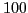
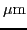

A stochastic multi-scale based approach is presented in this work to detect signatures of micro-anomalies from macro-level response variables. In this work, we particularly consider polycrystalline materials, e.g., Aluminium. Thus, by micro-anomalies, we refer to micro-cracks of size -


, while macro-level response variables imply, e.g., strains, strain energy density of macro-level structures of typical size often varying at the order of - m (e.g., an aircraft wing). For different material and systems (e.g., sand and geo-mechanical systems), the sizes of micro- and macro- level scales may, of course, be significantly different. The micro-anomalies in the context of present work are not discernible by the naked eye. Nevertheless, they can cause catastrophic failures of structural systems due to fatigue cyclic loading that results in initiation of fatigue cracks. Analysis of such precursory state of internal damage evolution, before a macro-crack visibly appears (say, size of a few cms), is beyond the scope of conventional crack propagation analysis, e.g., fracture mechanics. The present work is proposed to address this specific concern, and is an extension of an earlier work by Das & Ghanem (2009,2011). In the earlier work, macro-level (continuum) constitutive properties (e.g., constitutive elasticity tensors) of heterogeneous materials were constructed within a probabilistic formalism based on random matrix theory, maximum entropy principle, and principles of minimum complementary energy and minimum potential energy. The effects of micro-cracks are now incorporated into the present formulation by extending the previous work. Distinct differences are observed in the macro-level response characteristics depending on presence or absence of micro-cracks. Such stochastic information is used in the framework of optimization to detect the damaged region, consisting of microcracks, from experimentally obtained macroscale strain observations. Several schemes based on both heuristic and traditional optimization techniques are proposed and tested to detect damage due to microcracks depending on the availability of information. The proposed work is likely to be useful in health monitoring of structural systems in, but not limited to, aerospace, mechanical, and civil engineering applications.